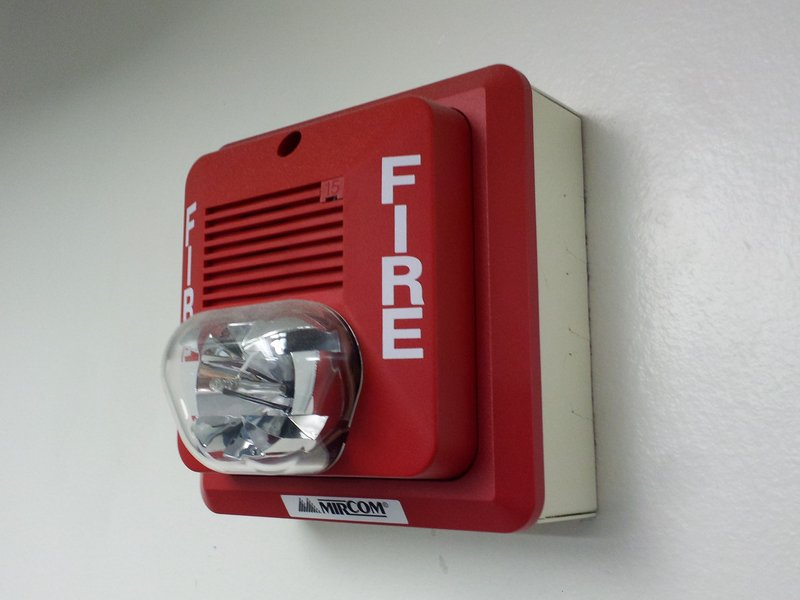

Smoke Detector
By: Jessica and Shiloh
Our project is a homemade, flammable replica of a modern type of fire alarm. A fire alarm helps in the real world because it can save lives by detecting whenever there is a fire. Our version is the “optical” type of fire alarm. It is called this because it sort of “sees” the smoke.

Materials required
- One Arduino Uno
- One Laser module
- One Photocell module
- One small Box
- Elastic Band(s)
- Wires
- One Breadboard

Circuit Diagram

This whole circuit will be in a box, connected to a battery as its power source. The box will have a hole in the bottom letting in any smoke. Basically the laser module will be pointing under the photocell module, but when the smoke enters it will scatter the light beam and some of it will shine on the photocell module. When it lands on the photocell module a really annoying buzzer is programmed to go off.
Code
Our code is basically a bunch of variables, and setting up the sensors. After that we basically just have one if statement telling the program what to do if light enters the photocell.
The only special thing about our code is the function tone();.This function needs two arguments, but can also take three.
The arguments are:
1. The pin number
2.The frequency in hertz
3.(optional) The duration
int PCellPin = A0; // select the analog input pin for the photoresistor
int PCellValue = 0; // Photoresistor Value
int laserPin = 12;// Digital Pin for the laser module
int piezoPin = 8;// Digital pin for the piezo buzzer
void setup() {
Serial.begin(9600); // Begin the serial moniter. 9600 bits per second
pinMode(laserPin, OUTPUT); // The laser is the output, meaning it can provide some energy to other circuits
digitalWrite(laserPin, HIGH); // this basically turns the laser on
}
void loop() {
PCellValue = analogRead(PCellPin); // Read the photoresistor pin, a value from 1 to 2300; 1 meaning there's lot's of light entering the photoresistor, and 2300 meaning there's no light entering it.
Serial.println(PCellValue); // Print the values the photoreseitor is reading on the serial moniter
delay(20); // Wait for 20 milliseconds
digitalWrite(laserPin, HIGH); // Turning it on again??? I don't know why this is here
// If the value of the photocell is less than 910 and the value is also less than 900, then turn the buzzer on ( the correct term isn't coming to me ).
if( PCellValue < 910 && PCellValue > 900){
tone(piezoPin, 1000, 100); // tone function, consult this webpage for more info
}
}
Slides Explanation
Click this and go to present
Demostration Video
Click this